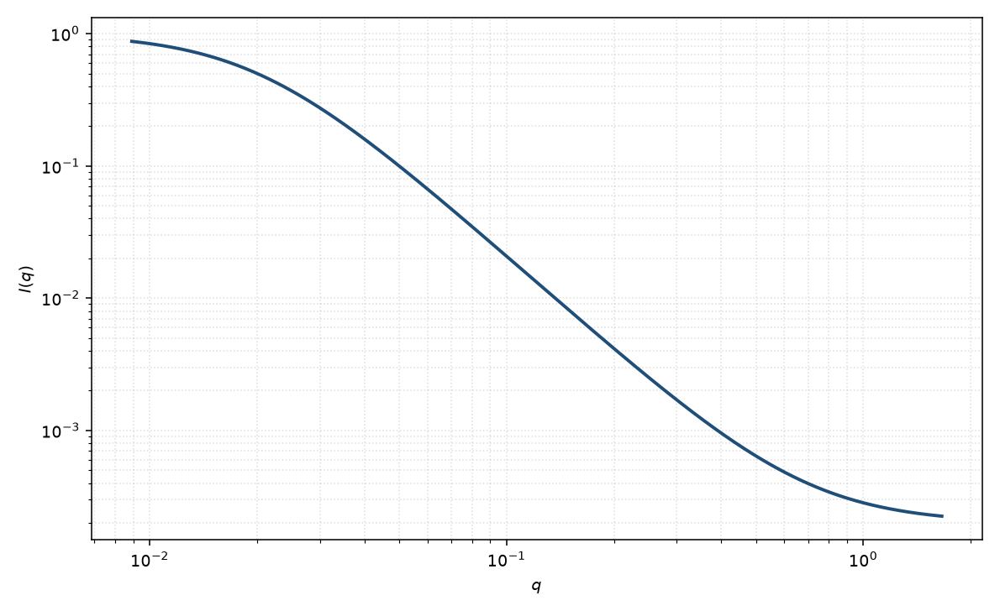

关联长度
correlation length
适用场景
只需要一个关联长度、又希望高 $q$ 指数可调时，用广义洛伦兹 $1/(1+(q\xi)^m)$。它覆盖 OZ（$m=2$）到接近 DAB/Porod（$m=4$）的中间情形。
有峰则加 $q_0$ 变成宽峰。明确两相光滑界面时优先 DAB，以便把 $\xi$ 连到面积。
物理图像
把 OZ 分母的 $q^2$ 换成 $(q\xi)^m$，就在不引入峰位的前提下改变尾的陡度。$\xi$ 仍是使 $q\xi\sim 1$ 的特征长度，但与 Debye $\xi$ 的定量关系随 $m$ 而变。
这是经验式。磁性涨落可以有不同的 $m$ 与 $\xi$。
示意图

核心公式
关联长度经验式
$$I(q)=\frac{A}{1+(q\xi)^m}+B.$$$m=2$ 为 Ornstein–Zernike；$m=4$ 的尾接近 DAB，但前置因子不再等于 $8\pi\phi(1-\phi)(\Delta\rho)^2\xi^3$。
参数表
| 参数 | 符号 | 含义 | 单位 | 典型范围 |
|---|---|---|---|---|
| 关联长度 | $\xi$ | 使 $q\xi\sim 1$ 的特征长度 | Å | 10–1000 Å |
| 指数 | $m$ | 尾的陡度 | 无量纲 | 通常 $2$–$4$ |
| 幅度 | $A$ | 低 $q$ 幅度 | 与强度单位一致 | 与涨落强度相关 |
| 标度 / 本底 | $\mathrm{scale}$, $B$ | 前置因子与常数本底 | 与强度单位一致 | 实验相关 |
拟合注意
取向：各向同性假定。拉伸网络应使用椭球状 $\xi$ 或回到几何模型。
多分散把有效 $m$ 拉向中间值，并与本底简并。磁性：$m$ 偏离 $4$ 可以来自磁界面粗糙，而不是核孔。
可辨识性：$m$、$\xi$、$B$ 三者相关。先在双对数上读斜率再放开 $m$。不要把本模型的 $\xi$ 直接代入 DAB 的 $S/V$ 公式。
相近模型
- 洛伦兹 — $m=2$ 的物理 OZ 极限。
- Debye–Anderson–Brumberger — $m=4$ 且幅度有两相公式。
- 宽峰 — 同一经验式加上峰位 $q_0$。
参考文献
- Debye, P.; Anderson, H. R., Jr.; Brumberger, H. J. Appl. Phys. 1957, 28, 679–683. DOI: 10.1063/1.1722748
- Ornstein, L. S.; Zernike, F. Proc. Acad. Sci. Amsterdam 1914, 17, 793–806.